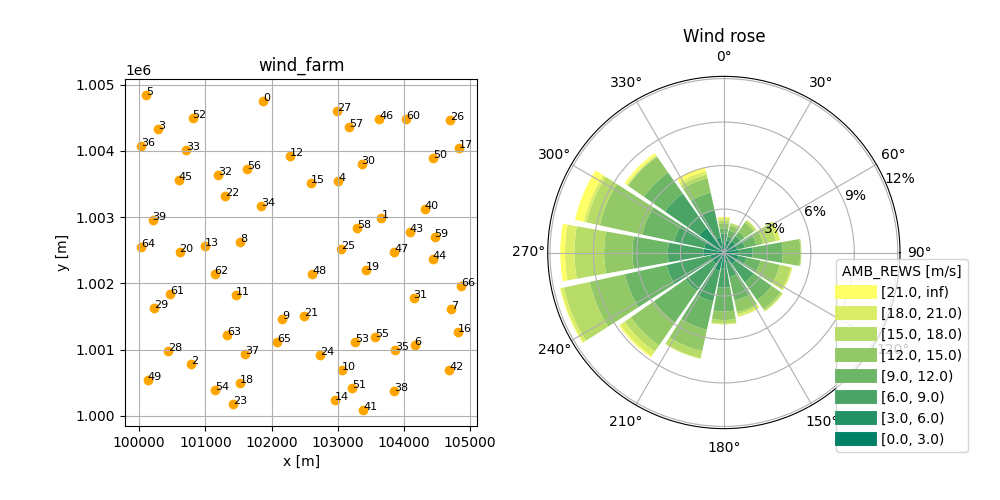

Input parameter files¶
Instead of running foxes via a Python script, it can also be run from input parameter
files in YAML format. For this purpose the two
command line applications foxes_yaml and foxes_windio have been added.
foxes_yaml¶
Command and options¶
The command line tool foxes_yaml accepts input yaml files that follow a foxes specific
structure, that will be described shortly. A file with the name inputs.yaml can then be run in a terminal by
foxes_yaml inputs.yaml
If the parameter file is located at a different location, the working directory will be set to the parent directory of the file. For example
foxes_yaml path/to/inputs.yaml
will have the working directory path/to/, i.e., all relative file paths for reading and writing will be interpreted relative to that directory. However, absolute file paths will not be altered.
The foxes_yaml command has multiple options, which can be checked by
foxes_yaml -h
For example, it is possible to everrule the rotor_model choice of the inputs.yaml file by the model choice grid25, by
foxes_yaml inputs.yaml -r grid25
Also engine choices can be overruled, for example by
foxes_yaml inputs.yaml -e process -n 8
for enforcing a parallel run on 8 processors using the ProcessEngine.
If you wish to modify the default output directory, you can do so by
foxes_yaml inputs.yaml -o results
which will then write all results files to a directory called results, relative to the working directory.
Input file structure¶
The structure of foxes yaml files is very close to the foxes code base. Let’s look at an example, available here in the foxes repository:
states:
states_type: Timeseries # class from foxes.input.states
data_source: timeseries_8000.csv.gz # specify constructor arguments here
output_vars: [WS, WD, TI, RHO]
var2col:
WS: ws
WD: wd
TI: ti
fixed_vars:
RHO: 1.225
model_book: # this section is optional
turbine_types: # name of the model book section to be updated
- name: my_turbine # name of the new model
ttype_type: PCtFile # class from foxes.models.turbine_types
data_source: NREL-5MW-D126-H90.csv # specify constructor arguments here
wind_farm:
layouts: # list functions from foxes.input.farm_layout below
- function: add_from_file
file_path: test_farm_67.csv
turbine_models: [my_turbine]
algorithm:
algo_type: Downwind
wake_models: [Bastankhah2014_linear_k004]
calc_farm: # this section is optional; will run by default
run: True # this triggers algo.calc_farm
outputs: # this section is optional
- output_type: FarmResultsEval # class from foxes.output
functions: # list of functions from that class below
- function: add_capacity
- function: add_efficiency
- output_type: StateTurbineMap # class from foxes.output
functions: # list of functions from that class below
- function: plot_map # name of the function
variable: "EFF" # specify function parameters here
cmap: "inferno"
figsize: [6, 7]
- output_type: plt # class from foxes.output
functions: # list of functions from that class below
- function: show # runs plt.show(), triggering the display
- function: close # runs plt.close(), optional
Any of the applicable foxes classes and functions can be added to the respective section of the input yaml file, together with the specific parameter choices.
Whenever the outputs provided by the foxes.output package are sufficient for what you are planning to do, e.g. simple results writing to csv or NetCDF files, foxes_yaml might be the easiest way of running foxes for you.
Plot creation and variables¶
For the purpose of more complex outputs, it is possible to store results of functions under variables, whose names are required to start with the $ symbol.
Here is an example modification of the above input file which makes use of variables for the generation of a plot that is combined out of two sub-plots:
outputs:
- output_type: plt
functions:
- function: figure
figsize: [10, 5]
result_labels: $fig # store the result of the function under $fig
- object: $fig # now run functions of the object behind $fig
functions:
- function: add_subplot
args: [1, 2, 1]
result_labels: $ax1 # store the pyplot.Axes object under $ax1
- function: add_subplot
args: [1, 2, 2]
polar: True # this Axes object applies polar projection
result_labels: $ax2 # store the pyplot.Axes object under $ax2
- output_type: FarmLayoutOutput
functions:
- function: get_figure
fig: $fig # pass the stored Figure object to the function
ax: $ax1 # pass the stored Axes object to the function
- output_type: RosePlotOutput
functions:
- function: get_figure
turbine: 0
ws_var: AMB_REWS
ws_bins: [0, 3, 6, 9, 12, 15, 18, 21]
add_inf: True
wd_sectors: 16
title: Wind rose
fig: $fig # pass the stored Figure object to the function
ax: $ax2 # pass the stored Axes object to the function
- output_type: plt
functions:
- function: savefig # save the created figure to file
fname: result.png # file location will be relative to the yaml file
- function: show
- function: close
If a function returns more than one result, those can be associated with variables by providing corresponding lists of variable names, e.g. result_labels: [$a, $b] for a function that returns two objects.
For objects that are array-like, it is additionally possible to use a syntax like $data[0] or $data[0, 2, 5], etc, for passing sub elements of stored results to function arguments.
Notice the line object $fig which starts a section that calls functions of the object behind the $fig variable, instead of an instance of an output_type.
The above outputs create and save a figure that is composed of two sub plots, where the second is based on polar projection:
{kind=link}
foxes_windio¶
The windio framework is an attempt to unify input and output data of software tools in the wind energy community. This framework is also based on yaml files following a specific schema, which is still under development. Currently foxes is following a windIO fork, which can be installed by
pip install git+https://github.com/EUFLOW/windIO@master#egg=windIO
windio input can be interpreted and run by foxes via the foxes_windio command line tool:
foxes_windio path/to/windio_input.yaml
The command line options are very similar to foxes_yaml, see above, and
foxes_windio -h